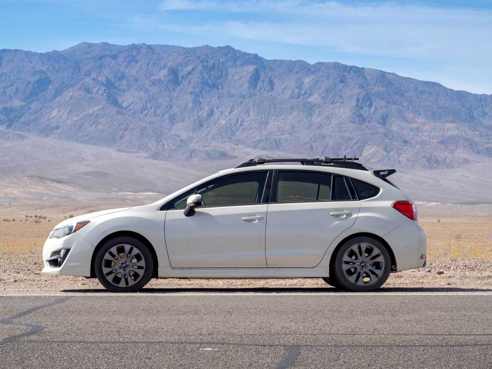

Subaru Impreza XV Crosstrek - GP7 Chassis Overview
This is a sport compact hatchback with interior room to spare
Features

2016 Subaru Impreza Sport CVT - Death Valley, California USA
Stock Specifications:
- Coefficient of drag (Cd): 0.32
- Wheelbase: 104.1"
- Weight: 3,109 lbs
- Ride Height: 5.9"
- Est. Top Speed: 120 mph
- 17"x7" wheels 205/50/R17 tyres
- Length: 174"
- Width: 68.5"
- Height: 59.4"
- Track (f/r): 59.4"/59.6"
Back to Subaru Impreza Tuner